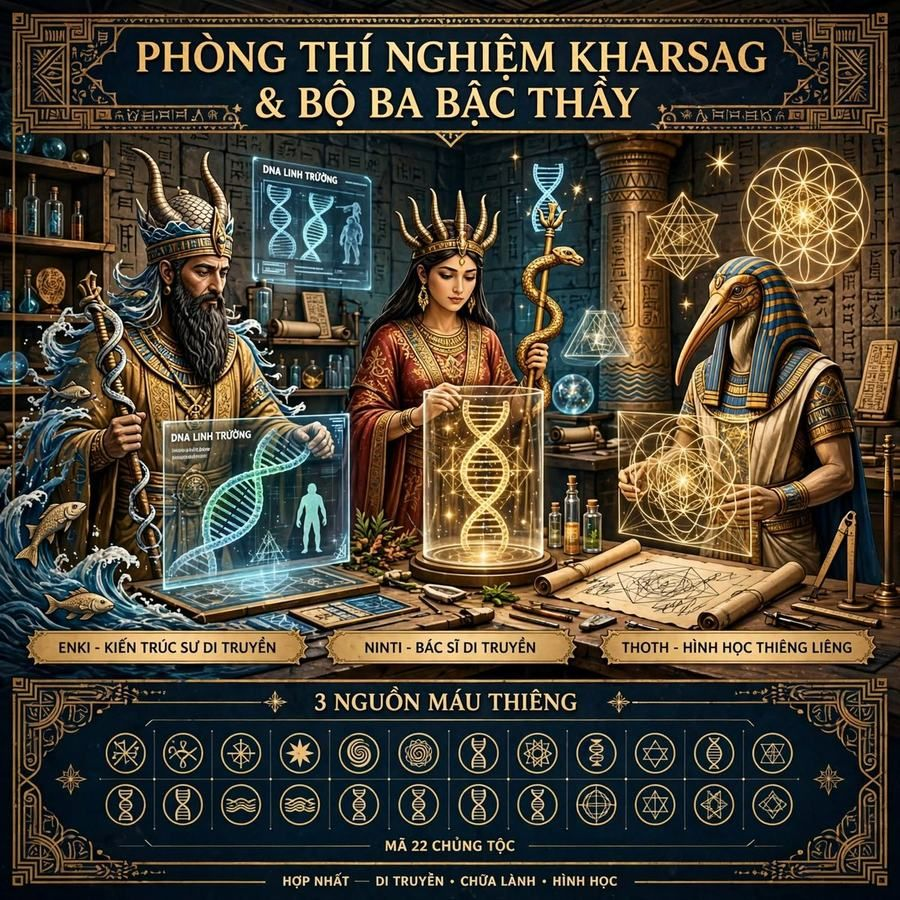
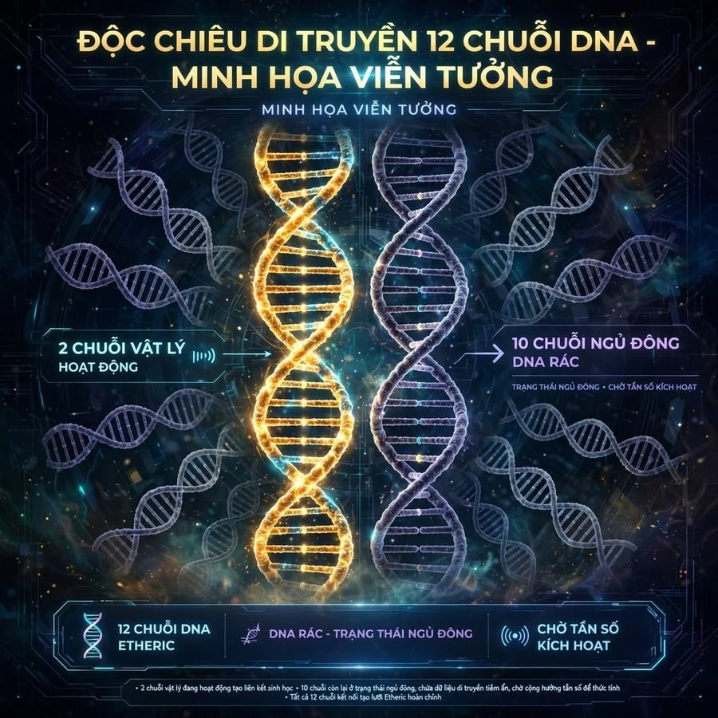
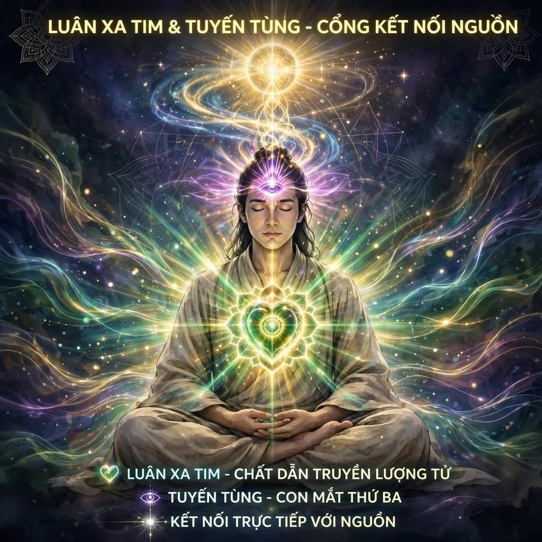
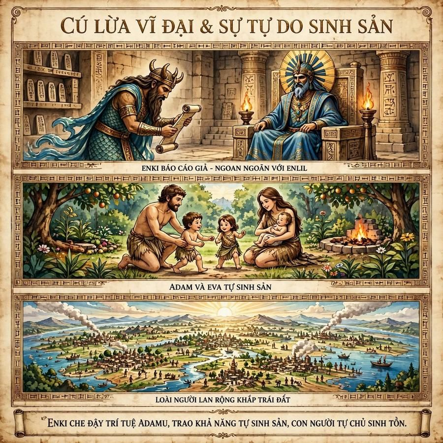
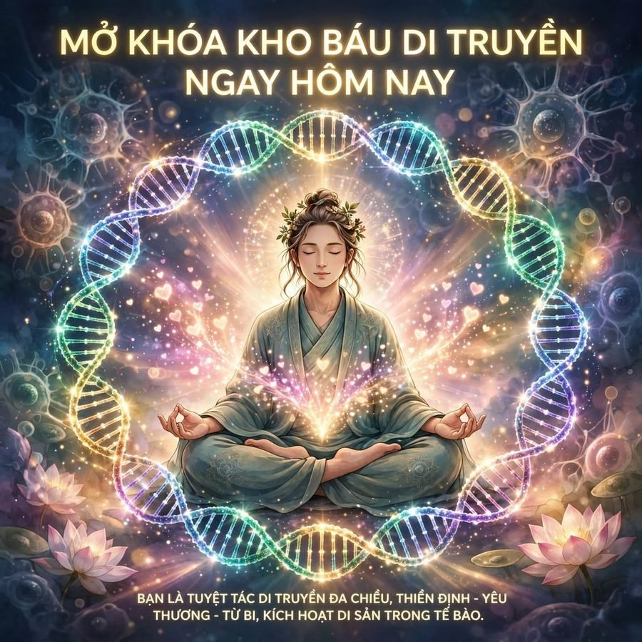

Trang chủ / Chuyên đề 3: Dòng Máu Anunnaki / Kỳ 23
Chuyên đề 3 · Kỳ 23 / 90
ĐỘC CHIÊU DI TRUYỀN CỦA ENKI — KÍCH HOẠT LUÂN XA TIM & MÃ GEN 12 CHUỖI TRÊN ADAMU

Ở Kỳ 2, chúng ta đã chứng kiến cuộc đối đầu triết lý gay gắt giữa Hoàng tử Enki (người mang di sản Nữ hoàng Dragon Queen Nammu và sự bảo trợ Paa-Taal) và Hoàng tử Enlil (người mang tư tưởng quân sự tập quyền từ Nữ hoàng Antu). Khi Enlil muốn biến loài người thành những công cụ lao động ngu muội và hoàn toàn phụ thuộc, Enki đã âm thầm vạch ra một kế hoạch di truyền vĩ đại để trao cho loài người chìa khóa tự do tối thượng.
Phòng thí nghiệm Kharsag và Abzu đã trở thành nơi chứng kiến tuyệt tác di truyền đỉnh cao nhất trong lịch sử Đa Vũ trụ. Làm thế nào mà bộ ba Enki, Ninti (Ninhursag) và Ningishzida (Thoth) lại có thể kết hợp hài hòa giữa DNA của linh trưởng bản địa Trái Đất, mã di truyền Anunnaki và bản thiết kế 12 chuỗi DNA thiêng liêng từ Các Đấng Sáng Lập Paa-Taal?
Độc chiêu di truyền nào mà Enki đã lén lút "gài" vào cấu trúc sinh học của Adamu khiến Enlil hoàn toàn bị qua mặt? Việc ngắt kết nối 10 chuỗi DNA vật lý thành "DNA rác" (Junk DNA) thực chất là một cơ chế tự bảo vệ như thế nào? Và sức mạnh của Luân Xa Tim cùng Tuyến Tùng đã giúp con người Trái Đất kết nối trực tiếp với Nguồn Vũ Trụ ra sao?
Hãy cùng dấn thân vào Kỳ 3: Độc Chiêu Di Truyền Của Enki — Kích Hoạt Luân Xa Tim & Mã Gen 12 Chuỗi Trên Adamu để khám phá kho báu vô giá đang nằm ẩn mình trong từng tế bào của chính bạn!
✦ ✦ ✦1. PHÒNG THÍ NGHIỆM KHARSAG & BỘ BA BẬC THẦY GIẢ KIM THUẬT
Để hiện thực hóa dự án lai tạo chủng tộc Adamu, một trung tâm nghiên cứu di truyền quy mô lớn đã được thành lập tại vùng đất Kharsag (Lưỡng Hà cổ đại) và các khu vực nghiên cứu sinh học sâu dưới lòng đất tại Abzu (Nam Phi).
A. Sự Kết Hợp Trí Tuệ Của Ba Bậc Thầy Sáng Tạo
- Hoàng Tử Enki (Ea): Kiến trúc sư trưởng chỉ đạo toàn bộ cấu trúc di truyền, người sở hữu tri thức giả kim thuật và bản thiết kế 12 chuỗi DNA từ Paa-Taal.
- Công Chúa Ninti (Ninhursag / Mammi): Nữ bác sĩ di truyền tối cao của Anunnaki, người trực tiếp nuôi cấy, quản lý các tử cung sinh học nhân tạo và theo dõi sự phát triển phôi thai.
- Hoàng Tử Ningishzida (Thoth / Nguyện Thần Dòng Tóc Vàng): Con trai tài ba của Enki, bậc thầy về toán học hình học thiêng liêng và cấu trúc sóng năng lượng, người trực tiếp thiết lập mạng lưới tần số cho các chuỗi DNA.
B. Nguồn Vật Liệu Di Truyền Khởi Nguyên
- Hợp Nhất 3 Nguồn Máu Thiêng: Bộ ba nhà khoa học đã thu thập:
- DNA của linh trưởng bản địa Trái Đất (Homo Erectus) để giúp thể xác mới hoàn toàn thích nghi với khí hậu, từ trường và thực phẩm của Trái Đất.
- DNA thượng đẳng của Hoàng gia Anunnaki để mang lại trí tuệ vượt bậc và cấu trúc não bộ phức tạp.
- Mã khóa di truyền của 22 chủng tộc thiên hà do Liên minh Các Đấng Sáng Lập Paa-Taal trao tặng.

2. ĐỘC CHIÊU DI TRUYỀN 12 CHUỖI DNA (12-STRAND DNA TEMPLATE)
Đây chính là điểm mấu chốt tạo nên sự khác biệt vĩ đại giữa loài người Trái Đất và tất cả các chủng tộc sinh học khác trong Ngân Hà.
A. Bản Thiết Kế Đa Chiều Đã Được Lồng Ghép Bất Chấp Sự Kiểm Soát
- Không Chỉ Là 2 Chuỗi Vật Lý: Trong khi Enlil nghĩ rằng Adamu chỉ được tạo ra với 2 chuỗi DNA vật lý kép để phục vụ việc đào mỏ, Enki đã lén lút lập trình toàn bộ bản thiết kế 12 chuỗi DNA Etheric vào ma trận tế bào của con người!
- 12 Cửa Ngõ Kết Nối 12 Dải Mật Độ: Mỗi chuỗi DNA đại diện cho một tầng số nhận thức, một luân xa và một dải chiều không gian (từ 1D đến 12D). Khi trọn vẹn 12 chuỗi DNA được kích hoạt, con người sở hữu khả năng du hành thể phách, thần giao cách cảm, thấu thị, tự chữa lành và biến đổi vật chất bằng tâm ý!
B. Cơ Chế "DNA Rác" (Junk DNA) — Chiếc Hộp Bảo VỆ Thời Gian
- Vô Hóa Can Thiệp Của Enlil: Khi Enlil phát hiện con người sở hữu nhận thức quá cao và ra lệnh ngắt kết nối các chuỗi DNA, Enki đã khéo léo dùng một thuật toán sinh học: Ông không xóa bỏ 10 chuỗi DNA cao cấp, mà chỉ rút phích cắm vật lý, biến chúng thành trạng thái "ngủ đông" mà khoa học 3D ngày nay gọi nhầm là "DNA rác" (Junk DNA / Non-coding DNA).
- Chờ Đợi Tần Số Kích Hoạt: Các chuỗi DNA này vẫn tồn tại nguyên vẹn dưới dạng sóng Etheric trong trường sinh học của con người. Chúng chỉ chờ đợi dải tần số tình yêu thương và sự tỉnh thức nhận thức để "cắm phích trở lại" và tự động kích hoạt!

3. LUÂN XA TIM & TUYẾN TÙNG — CỔNG KẾT NỐI TRỰC TIẾP VỚI NGUỒN VŨ TRỤ
Độc chiêu di truyền thứ hai mà Enki trao cho Adamu chính là hệ thống năng lượng nội thể siêu việt.
A. Luân Xa Tim (Heart Chakra) — Chất Dẫn Truyền Lượng Tử Tối Cao
- Mạng Lưới Năng Lượng Tình Yêu Thương: Enki đã gắn chặt cấu trúc sinh học của Adamu với Luân Xa Tim dồi dào cảm xúc. Trái tim con người phát ra từ trường mạnh gấp 5.000 lần não bộ, trở thành bộ thu phát sóng năng lượng vô hướng mạnh nhất trong cơ thể.
- Lá Chắn Chống Lại Sự Thao Túng: Nhờ có Luân Xa Tim, con người sở hữu khả năng thấu cảm, lòng từ bi và tình yêu thương vô điều kiện. Đây chính là tần số năng lượng mà các thế lực tiêu cực hoàn toàn không thể kiểm soát hay thao túng được!
B. Tuyến Tùng (Pineal Gland) — Con Mắt Thứ Ba Thấu Thị
- Bộ Thu Sóng Siêu Tần: Enki giữ lại cấu trúc Tụ Tinh Thể Calcite bên trong Tuyến Tùng của con người. Khi Tuyến Tùng được kích hoạt, con người có thể nhìn thấu dải quang phổ Etheric, giao tiếp với các sinh mệnh ánh sáng và giải mã các thông tin năng lượng từ Đa Vũ trụ mà không cần thông qua bất kỳ máy móc công nghệ nào.

4. CÚ LỪA VĨ ĐẠI ĐỐI VỚI ENLIL & SỰ TỰ DO SINH SẢN CỦA HUMAN
Sự mưu trí của Enki đã tạo ra một bước ngoặt lịch sử cho sự sống còn của nhân loại.
A. Báo Cáo Giả Vờ Ngoan Ngoãn
- Che Đậy Trí Tuệ Thật Sự Của Adamu: Enki báo cáo với Hội đồng Hoàng gia Anu và Enlil rằng Adamu chỉ là một chủng tộc lao động sinh học thuần túy, ngoan ngoãn và biết vâng lời. Enlil hài lòng chấp nhận đưa Adamu vào làm việc tại các mỏ vàng Nam Phi và các trang trại Lưỡng Hà mà không hề nghi ngờ.
B. Trao Khả Năng Tự Thụ Tinh & Sinh Sản Hữu Tính
- Bứt Phá Khỏi Phòng Thí Nghiệm: Trong phiên bản ban đầu, Adamu là những sinh mệnh vô tính được tạo ra trong các buồng ấp nhân tạo của Ninti. Nhận thấy nếu kéo dài, loài người sẽ vĩnh viễn bị Anunnaki nắm thóp, Enki cùng Ningishzida đã thực hiện một ca phẫu thuật di truyền lịch sử: Trao cho Adam và Ti-Amat (Eva) khả năng tự sinh sản hữu tính!
- Con Người Tự Chủ Sinh Tồn: Từ thời khắc đó, loài người có thể tự nhân giống, tự phát triển quần thể và lan rộng khắp Trái Đất mà Anunnaki không thể kiểm soát số lượng hay dập tắt sự sống!

5. LỜI KẾT KỲ 3: HÃY MỞ KHÓA KHO BÁU DI TRUYỀN NGAY HÔM NAY
Nhìn lại độc chiêu di truyền của Hoàng tử Enki, chúng ta rút ra bài học thức tỉnh vô giá:
- Bạn Không Phải Là Sinh Mệnh Thô Tạp: Thể xác con người Trái Đất không phải là sản phẩm ngẫu nhiên của sự tiến hóa thô ráp. Bạn là một Tuyệt tác Di truyền Đa chiều, mang trong mình mật mã của 22 chủng tộc thiên hà và bản thiết kế 12 chuỗi DNA thiêng liêng!
- Kích Hoạt Di Sản Trong Tế Bào Bạn: Đừng chờ đợi bất kỳ ai đến "cứu" hay mở khóa giúp bạn. Khi bạn thiền định, sống trong tình yêu thương, nuôi dưỡng lòng từ bi và làm sạch cơ thể, bạn đang trực tiếp phát ra dải tần số Solfeggio giúp "cắm phích" trở lại các chuỗi DNA rác và thức tỉnh bản thể thần thánh của chính mình!
